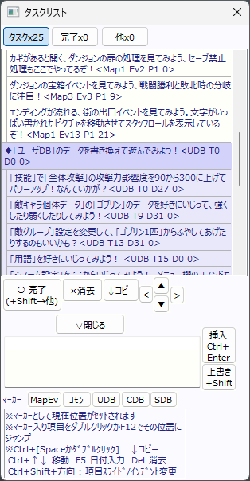

【タスクリスト】
タスクリストは、メインウィンドウの「表示」→「タスクリスト」を選択して開くことができます。
このタスクリストは、「これから行う作業をメモする」だけでなく、マーカーを付けることで「よく開く場所をブックマーク」するのにも使えます。扱いに慣れると、様々な意味で次への作業が効率化できるでしょう。
※マーカー：タスクに付けておくと、マップEvやコモンEv、データベース内の特定の箇所を一発で開くことができる位置マーカー。たとえば「<Map1 Ev2 P1 0>」（マップ1のイベント2のページ1の0行目）のように記述される。
|  | 【タスク】【完了】【他】ボタン： タブを切り替えられます。 「○完了」ボタン： 「タスク」タブ中でのみ表示されます、押すとタスクが完了し、 選択中の項目が「完了」タブに移動します。 （子タスクも選ばれている状態だとまとめて移動します！） 他の「完了」「他」タブだと「タスクに戻す/タスクへ移動」ボタンになります。 「×消去」ボタン： そのタスクを消去します。 「↓コピー」ボタン： そのタスクの内容を文字入力欄にコピーします。 Ctrl+ShiftやCtrl+ダブルクリックでも行えます。 「<▲▼>」移動キーボタン： 選んだタスクを上下に移動させたり、 インデントを付けたりできます。 「▽閉じる」： 下部の入力欄を閉じて、上のタスク欄を広くします。 「挿入」ボタン： 新しいタスクを挿入します。Ctrl+Enterでも行えます。 「上書き」ボタン： 選択中のタスクを上書きします。 Ctrl+Shift+Enterでも行えます。 【マーカー】ボタン： マップEv、コモンEv、ユーザDB、可変DB、システムDBの 「今ひらいている場所」をマーカーとして文字欄に入力します。 マーカーのついたタスクをダブルクリックするかF12を押すと そのマーカー位置のイベントやDBを開くことができます。 |
|||